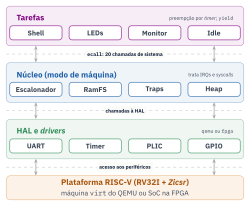

Visão geral e inicialização¶
Filosofia de projeto¶
O AXON-OS roda inteiramente em Modo Máquina (M-mode) do RISC-V — tanto o kernel quanto as tarefas de usuário compartilham o mesmo nível de privilégio máximo. Não há MMU, não há isolamento de memória entre tarefas, e não há modo usuário (U-mode). Essa é uma simplificação deliberada e documentada: o foco do projeto é a mecânica de escalonamento, gerência de memória, sistema de arquivos e a integração com um SoC customizado — não a construção de um sistema de proteção completo.
Ainda assim, o AXON-OS usa a instrução ecall para separar tarefas do kernel através de uma fronteira lógica de syscalls (veja Interrupções e chamadas de sistema), pelo mesmo motivo que sistemas "de verdade" fazem: organização do código e compatibilidade com uma futura adição de modo usuário, sem reescrever as tarefas.
Camadas do sistema¶

ecall; o núcleo acessa o hardware só pela HAL, cuja implementação muda entre QEMU e FPGA.As tarefas (src/apps, src/bin) rodam sobre o núcleo (src/kernel), que reúne o escalonador, o gerenciador de memória, o sistema de arquivos e o tratamento de traps. O núcleo nunca acessa periféricos diretamente: tudo passa pela HAL (include/hal e src/drivers), o que permite compilar o mesmo núcleo para os dois alvos.
Fluxo de execução, em uma frase¶
start.sprepara a pilha e zera o.bss, então chamakernel_main().kernel_main()inicializa drivers, o heap, o sistema de arquivos, as interrupções e cria as tarefas iniciais.kernel_main()chamaschedule()uma única vez e "morre" — a partir daí, o controle da CPU pertence às tarefas e ao trap handler.- O sistema inteiro passa a viver de eventos: o timer dispara a cada 100 ms (preempção) e as syscalls/interrupções externas (UART, etc.) chamam de volta o kernel sob demanda.
O detalhamento está na seção Inicialização.
Duas plataformas, um kernel¶
O AXON-OS foi desenhado para compilar, sem alterar uma linha de código do kernel, para dois alvos:
QEMU (virt) |
FPGA (SoC customizado) | |
|---|---|---|
| Uso | Desenvolvimento rápido, sem hardware | Alvo final do projeto |
| Clock | 10 MHz | 100 MHz |
| UART | 16550 padrão | Registrador customizado (UART_DATA_REG/UART_CTRL_REG) |
| CLINT / PLIC | Layout SiFive padrão | Layout próprio (offsets diferentes) |
| Periféricos extras | — | GPIO, DMA, VGA, NPU (acelerador de rede neural) |
Essa portabilidade é possível porque todo acesso a hardware passa por uma camada HAL (include/hal/*.h) com uma implementação por plataforma em src/drivers/qemu/ e src/drivers/fpga/. O makefile escolhe qual conjunto de drivers linkar. Veja Plataformas e drivers.
Inicialização¶
Do reset ao C¶
O ponto de entrada do AXON-OS é o símbolo _start, definido em src/bsp/start.s e apontado pelo linker script como ENTRY. Ele faz o mínimo indispensável antes de entregar o controle ao código C:
_start:
# 1. Stack pointer
la sp, _stack_top
# 2. Zerar BSS
la t0, _bss_start
la t1, _bss_end
bss_loop:
bge t0, t1, bss_done
sw zero, 0(t0)
addi t0, t0, 4
j bss_loop
bss_done:
# 3. Entrar no kernel C
call kernel_main
hang:
wfi
j hang
- Stack pointer: carrega
spcom_stack_top, o topo da RAM disponível (símbolo definido pelo linker script, veja abaixo). - Zerar
.bss: variáveis globais não inicializadas (.bss/.sbss) não vêm zeradas da ROM/RAM — o loopbss_looppercorre a região[_bss_start, _bss_end)em passos de 4 bytes escrevendo zero. Isso é essencial: código C assume que globais sem inicializador começam em zero. call kernel_main: transfere o controle parasrc/kernel/main.c.hang: rede de segurança — sekernel_main()algum dia retornar (não deveria, veja abaixo), a CPU entra em um laço dewfi(Wait For Interrupt) em vez de executar instruções aleatórias na memória.
Linker script¶
Cada plataforma tem seu próprio linker script, porque o layout de memória físico é diferente:
A RAM do modelo virt do QEMU começa em 0x80000000 — endereço padrão de várias plataformas RISC-V. O AXON-OS reserva 256 KB para si.
MEMORY
{
/* ORIGIN: 0x80000800 (pula 2KB do bootloader)
LENGTH: 254KB (256KB total - 2KB reservados) */
ram (wxa) : ORIGIN = 0x80000800, LENGTH = 254K
}
Na FPGA, os primeiros 2 KB da RAM são reservados para o bootloader residente na placa (o mesmo que fala o protocolo usado por upload.py) — por isso o kernel começa 2 KB depois do início físico da RAM.
Em ambos os casos, as seções seguem a mesma ordem — .text, .rodata, .data/.sdata, .bss/.sbss — e o linker exporta os símbolos usados pelo boot e pelo kernel:
| Símbolo | Uso |
|---|---|
_text_start / _text_end |
Limites do código executável |
_bss_start / _bss_end |
Região a ser zerada por start.s |
_end |
Fim de todas as seções carregadas — é aqui que o heap começa (veja Gerenciamento de memória) |
_stack_top |
Topo da pilha de boot, usado por start.s antes de kernel_main criar as pilhas das tarefas |
kernel_main(): as quatro fases¶
src/kernel/main.c documenta o próprio fluxo em um comentário de topo:
1. Bootloader (start.s) configura a pilha e chama kernel_main().
2. kernel_main() inicializa drivers e cria as tarefas.
3. kernel_main() chama schedule() e "morre" — o controle passa para as tarefas.
4. O sistema vive de Interrupções (Timer) e Exceções (Syscalls).
Fase 1 — Inicialização de hardware¶
hal_uart_init()e limpeza de tela via sequências ANSI, seguido do banner ASCII do AXON.- Diagnóstico de uso de memória do kernel:
_starte_end(símbolos do linker) são usados para calcular e imprimir o tamanho do binário carregado. - Inicialização do heap:
kmalloc_init((void*)_end, heap_size), ondeheap_size = RAM_TOTAL - kernel_size - 4096(os últimos 4 KB da RAM total ficam reservados como margem de segurança para a pilha de boot). - Inicialização do sistema de arquivos:
fs_init(), que por sua vez chamakmalloc()para reservar a região do RamFS dentro do heap recém-criado (veja Sistema de arquivos).
Fase 2 — Configuração de interrupções¶
hal_irq_set_handler(trap_entry): escreve o endereço detrap_entry(definido emtrap.s) no CSRmtvec, em modoDIRECT— ou seja, toda interrupção ou exceção, de qualquer causa, salta para o mesmo ponto de entrada.hal_timer_set_irq_delta(TICK_DELTA_CYCLES)arma o primeiro tick do timer (TICK_DELTA_CYCLES = 1.000.000ciclos — 100 ms a 10 MHz no QEMU).hal_irq_mask_enable(IRQ_M_TIMER)ehal_irq_global_enable()habilitam, respectivamente, a interrupção de timer específica e o bit globalMIEdomstatus.hal_irq_init()inicializa o PLIC (zera prioridades/enables) e habilita interrupções externas (IRQ_M_EXT).apps_init()registra o handler de interrupção da UART no PLIC (necessário para o shell receber teclado via IRQ em vez de polling).
Fase 3 — Criação de processos¶
scheduler_init();
task_create(task_leds, "Task LEDs", 1);
task_create(task_monitor, "Task Monitor", 1);
task_create(task_shell, "Task Shell", 2);
task_create(task_idle, "Idle", 0);
Quatro tarefas são criadas — o máximo suportado pelo sistema (MAX_TASKS = 4, veja Tarefas e escalonamento). A tarefa Idle é obrigatória: com prioridade 0, ela só roda quando nenhuma outra tarefa está pronta, e existe para o schedule() sempre ter alguém a entregar a CPU.
Fase 4 — Primeiro agendamento¶
A chamada final a schedule() escolhe a primeira tarefa e prepara next_task. Mas note: kernel_main() nunca de fato troca de contexto sozinho — quem executa a troca é o Assembly em trap.s, disparado normalmente por uma interrupção. Como aqui não houve trap, current_task continua NULL e next_task aponta para a tarefa escolhida; a primeira troca de contexto real acontece no primeiro tick do timer, alguns milissegundos depois. O while(1) nop após o schedule() é apenas uma rede de segurança — código inalcançável em operação normal.
Diagrama do fluxo¶
sequenceDiagram
participant HW as CPU (Reset)
participant Start as start.s
participant Main as kernel_main()
participant Sched as Escalonador
HW->>Start: PC = _start
Start->>Start: sp = _stack_top
Start->>Start: zera .bss
Start->>Main: call kernel_main()
Main->>Main: Fase 1: drivers, heap, RamFS
Main->>Main: Fase 2: trap vector, timer, PLIC
Main->>Sched: Fase 3: scheduler_init() + task_create() x4
Main->>Sched: Fase 4: schedule()
Note over Sched: next_task definido, mas ainda sem troca real
Note over HW: Primeiro tick do timer dispara trap_entry
HW->>Sched: Troca de contexto real (trap.s)